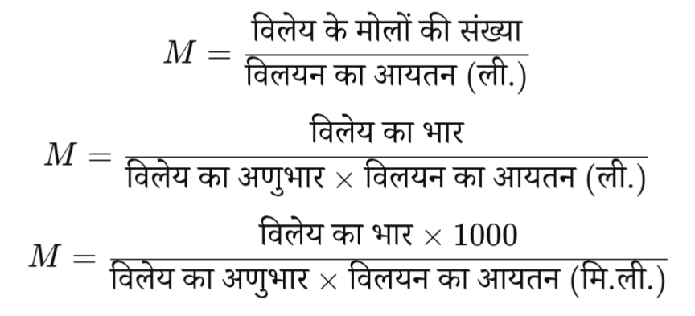
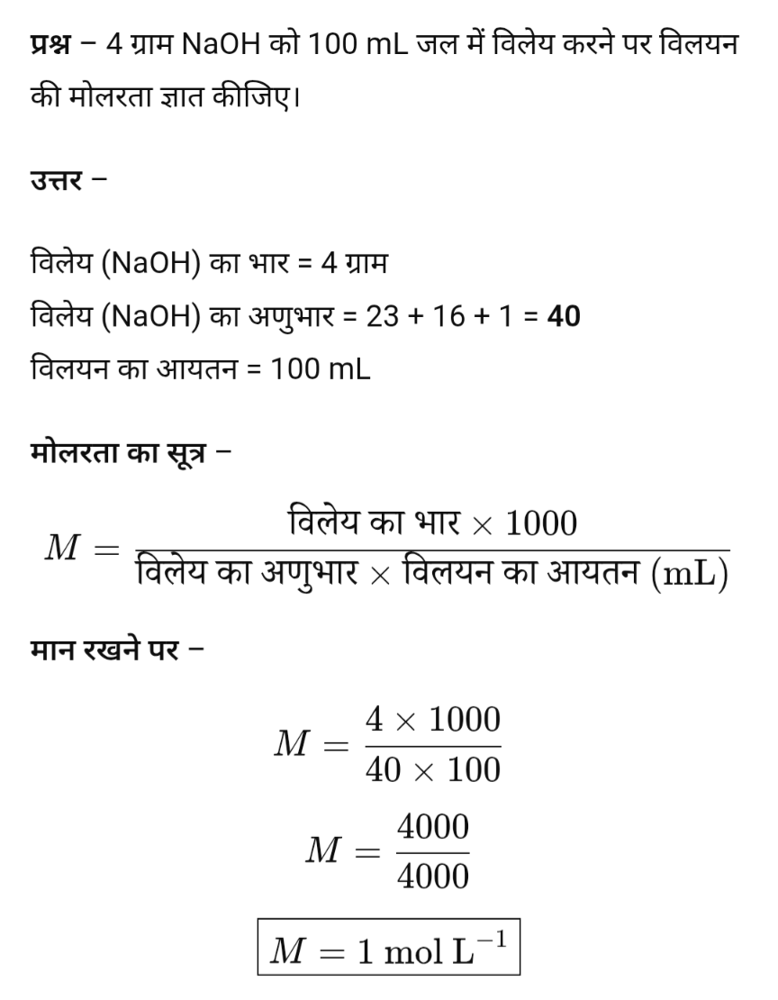
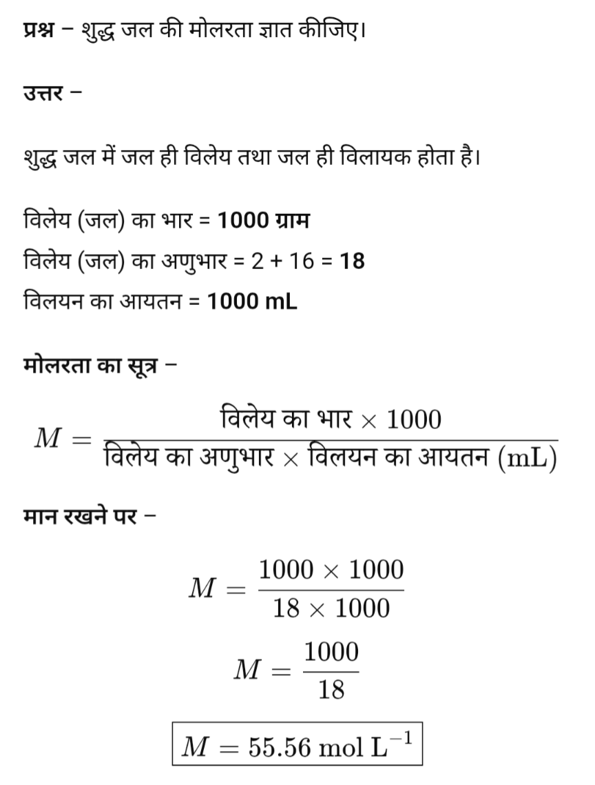
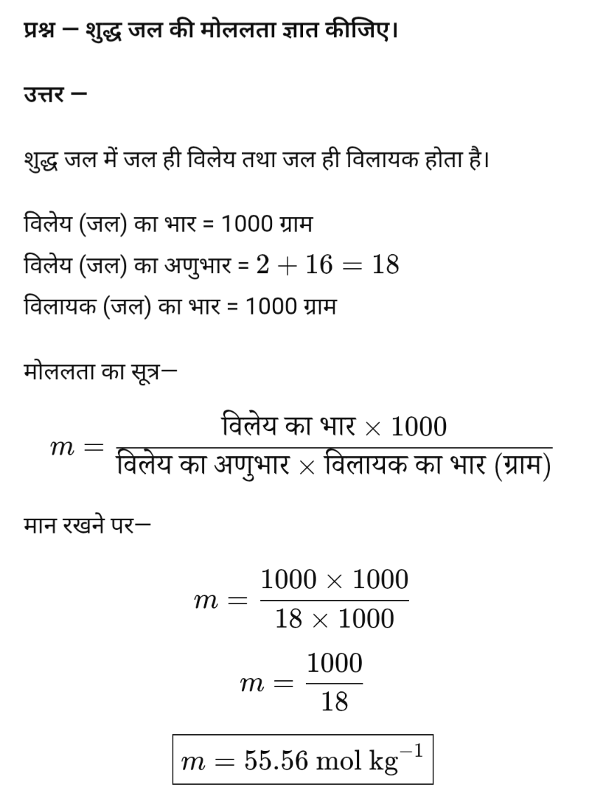
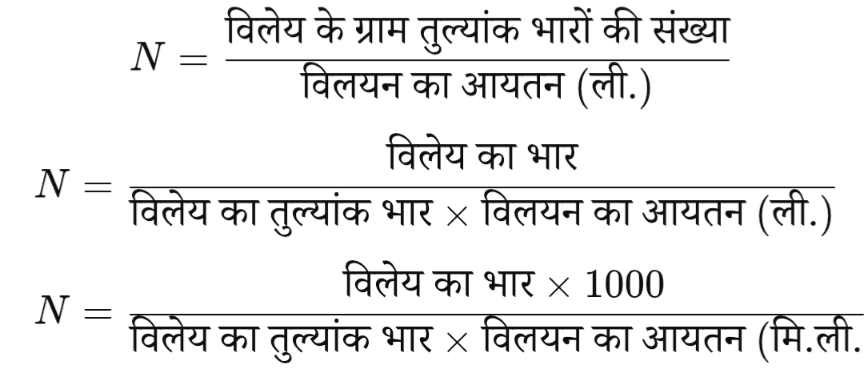
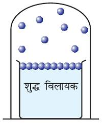
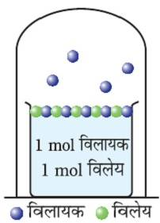
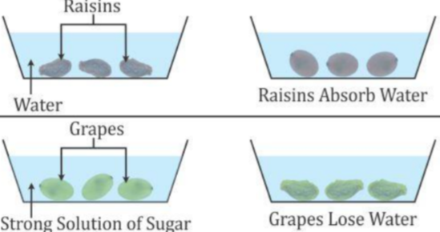
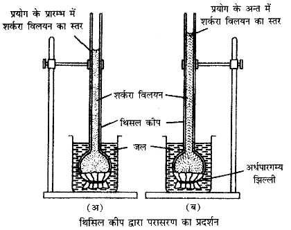

दो या दो से अधिक पदार्थों के समांगी मिश्रण को विलयन कहते हैं।
जैसे नमक और जल का विलयन।
विलयन में, जिस पदार्थ की मात्रा अधिक होती है उसे विलायक कहते हैं और जिसकी मात्रा कम होती है उसे विलेय कहते हैं।

सान्द्रता के आधार पर विलयन पाँच प्रकार के होते हैं।
- सान्द्र विलयन
- तनु विलयन
- संतृप्त विलयन
- असंतृप्त विलयन
- अतिसंतृप्त विलयन।
विलयन की सांद्रता को व्यक्त करने की निम्न इकाइयाँ हैं:
- मोलरता
- मोललता
- नॉर्मलता
- फॉर्मलता
- मोल भिन्न
- प्रतिशतता
- ppm Conc.
पदार्थ को मापने की निम्न तीन इकाइयाँ हैं:
- ग्राम मोल= भार / अणुभार
- ग्राम मोल तुल्यांक भार = भार / तुल्यांक भार
- ग्राम सूत्र भार = भार / सूत्रभार
किसी विलयन के एक लीटर आयतन में उपस्थित विलेय के ग्राम मोलों की संख्या को उस विलयन की मोलरता कहते हैं। इसे (M) से प्रदर्शित करते हैं।
अर्थात मोलरता

मोलरता इकाई मोल/लीटर है।



एक किग्रा विलायक मे उपस्थित विलेय के ग्राम मोलो की संख्या को मोललता कहते है। इसे m से व्यक्त करते हैं।
अर्थात मोललता

मोललता इकाई मोल/किलो ग्राम है।


मोलरता | मोललता | |
एक लीटर विलयन में उपस्थित विलेय के मोलों की संख्या मोलरता कहलाती है। | एक किलोग्राम विलायक में उपस्थित विलेय के मोलों की संख्या मोललता कहलाती है। | |
इसे आयतन में व्यक्त करते हैं। | इसे भार में व्यक्त करते हैं। | |
इसका मात्रक ग्राम मोल/लीटर है। | इसका मात्रक ग्राम मोल/किलोग्राम है। | |
इसमें आयतन की प्रधानता होती है। | इसमें भार की प्रधानता होती है। | |
यह तापमान से प्रभावित होती है। | यह तापमान से प्रभावित नहीं होती। |
एक लीटर विलयन में उपस्थित विलेय के ग्राम तुल्याकी भारो की संख्या को नार्मलता कहते है। इसे N व्यक्त करते हैं।
अर्थात नार्मलता

यदि NaOH की 4 ग्राम मात्रा 500 मिली विलयन में उपस्थित है, तो विलयन की नॉर्मलता ज्ञात कीजिए।
NaOH का तुल्यांक भार = 40
विलेय का भार = 4 ग्राम
विलयन का आयतन = 500 मि.ली. = 0.5 लीटर
नॉर्मलता का सूत्र:
मान रखने पर:
अतः विलयन की नॉर्मलता 0.2 N है।
यदि NaOH के 2 ग्राम 250 मिली. विलयन में उपस्थित हैं तो विलयन की नॉर्मलता ज्ञात कीजिए।
NaOH का तुल्यांक भार = 40
विलेय का भार = 2 ग्राम
विलयन का आयतन = 250 मि.ली. = 0.25 लीटर
नॉर्मलता का सूत्र:
मान रखने पर:
अतः विलयन की नॉर्मलता 0.2 N है।
एक लीटर विलयन में उपस्थित विलेय के ग्राम सुत्र भारो की संख्या को फार्मलता कहते है। इसे F व्यक्त करते हैं।
अर्थात फार्मलता

किसी विलयन में उपस्थित विलेय के या विलायक के मोलो की संख्या और विलयन मे उपस्थित सम्पूर्ण मोलो की संख्या के अनुपात को मोल भिन्न या मोल प्रभाज कहते है।
यदि किसी विलयन में विलेय के \(n_1\) मोल एवं विलायक के \(n_2\) मोल घुले हुए हों, तो इस विलयन में कुल मोलों की संख्या \(n_1+n_2\) होगी।

92 ग्राम एथिल ऐल्कोहॉल तथा 72 ग्राम जल के विलयन में एथिल ऐल्कोहॉल एवं जल का मोल-प्रभाज ज्ञात कीजिए।
एथिल ऐल्कोहॉल का अणुभार = 46
जल का अणुभार = 18
एथिल ऐल्कोहॉल के मोल
जल के मोल
कुल मोल
एथिल ऐल्कोहॉल का मोल-प्रभाज
जल का मोल-प्रभाज
विलियन के वे गुण जो विलेय की प्रकृति पर निर्भर न होकर विलेय के कणो की संख्या पर निर्भर होते है अणुसंख्यक गुण कहलाते हैं।
जैसे-
- वाष्प दाब का आपेक्षिक अवनमन
- विलयन का परासरण
- क्वथनांक का उन्नयन
- हिमांक का अवनमन

- वाष्प दाब – जब कोई द्रव उसकी वाष्प के साथ साम्यावस्था में होता है, तब वाष्प द्वारा द्रव की सतह पर लगाया गया दाब वाष्प दाब कहलाता है।
शुद्ध विलायक के वाष्प दाब को \(P_0\) से व्यक्त करते हैं।

- वाष्प दाब में अवनमन – जब किसी शुद्ध विलायक में कोई अवाष्पशील विलेय पदार्थ मिलाया जाता है, तो प्राप्त विलयन का वाष्प दाब कम हो जाता है। वाष्प दाब में इस कमी को वाष्प दाब अवनमन कहते हैं।
यदि शुद्ध विलायक का वाष्प दाब \(P_0\) तथा विलयन का वाष्प दाब \(P\) हो, तो
\[ \text{वाष्प दाब में अवनमन} = P_0 - P \]

- वाष्प दाब का आपेक्षिक अवनमन – किसी विलयन के वाष्प दाब में अवनमन तथा शुद्ध विलायक के वाष्प दाब के अनुपात को वाष्प दाब का आपेक्षिक अवनमन कहते हैं।
यदि शुद्ध विलायक का वाष्प दाब \(P_0\) तथा विलयन का वाष्प दाब \(P\) हो, तो
\[ \text{वाष्प दाब का आपेक्षिक अवनमन} = \frac{P_0 - P}{P_0} \]
अवाष्पशील विलेय के कण स्वयं वाष्प नहीं बनाते हैं। जब इन्हें किसी विलायक में मिलाया जाता है, तो ये विलायक के कणों के बीच स्थान ग्रहण कर लेते हैं तथा विलायक के कणों को सतह से वाष्प अवस्था में जाने से आंशिक रूप से रोकते हैं।
फलस्वरूप, विलायक के कम कण वाष्प अवस्था में पहुँच पाते हैं और विलयन का वाष्प दाब शुद्ध विलायक की अपेक्षा कम हो जाता है।

राउल्ट के नियम के अनुसार, स्थिर ताप पर किसी विलयन के वाष्पदाब में आपेक्षिक अवनमन, विलेय के मोल प्रभाज के बराबर होता है।
किसी विलयन का वाष्पदाब विलायक के मोल भिन्न के समानुपाती होता है।
आदर्श विलयन - वे विलयन जो सांद्रण एवं ताप की सभी परिस्थितियों में राउल्ट के नियम का पुर्णत पालन करते है आदर्श विलयन कहलाते है।
उदाहरण- बेंजीन व टाल्यून
गुण
- राउल्ट के नियम का पुर्णतः पालन होता है।
- आयतन पररिवर्तन शुन्य होता है।
अर्थात
∆Vmixing = 0
- एन्थेल्पी परविर्तन शुन्य होता है। अथर्थात ∆Hmixing = 0
अनादर्श विलयन - वे विलयन जो सांदण एवं ताप की सभी परिस्थितियो में राउल्ट के नियम का पुर्णतः पालन नहीं करते है अनादर्श विलयन कहलाते है।
उदाहरण – ऐसीटोन + बेंजीन |
गुण
- राउल्ट के नियम का पूर्णतः पालन नहीं होता है।
- आयतन परविर्तन शुन्य नहीं होता है। अर्थात
ΔVmixing ≠0
- एन्थैल्पी परविर्तन शुन्य नहीं होता है। अर्थात
ΔHmixing ≠0
आदर्श विलयन | अनादर्श विलयन |
ये राउल्ट के नियम का पूर्णतः पालन करते हैं। | ये राउल्ट के नियम का पूर्णतः पालन नहीं करते। |
आयतन परिवर्तन शून्य होता है (ΔVmixing = 0)। | आयतन परिवर्तन शून्य नहीं होता (ΔVmixing ≠ 0)। |
एन्थैल्पी परिवर्तन शून्य होता है (ΔHmixing = 0)। | एन्थैल्पी परिवर्तन शून्य नहीं होता (ΔHmixing ≠ 0)। |
उदाहरण – बेंजीन + टॉल्यून | उदाहरण – ऐसीटोन + बेंजीन |
अनादर्श विलयनो को प्रकृति के आधारपर दो भागो में विभक्त किया गया है.
- धन विचलन प्रदर्शित करने वाले अनादर्श विलयन - जिनका मान राउल्ट के नियम से प्राप्त मान से अधिक होता है धन विचलन प्रदर्शित करने वाले अनादर्श विलयन कहलाते है।
जैसे - ऐसीटोन व कार्बन डाईसल्फाइड ऐसीटोन व एथिल एल्कोहल ऐसीटोन व बेंजीन
- ऋण विचलन प्रदर्शित करने वाले अनादर्श विलयन - जिनका मान राउल्ट के नियम से प्राप्त मान से कम होता है ऋण विचलन प्रदर्शित करने वाले अनादर्श विलयन कहलाते है।
जैसे - क्लोरोफार्म व बेंजीन, ऐसीटोन व ऐनीलीन, क्लोरोफार्म व डाईएथिल
धनात्मक विचलन | ऋणात्मक विचलन |
विलयन का वाष्पदाब राउल्ट के नियम से परिकलित मानों से अधिक होता है। | विलयन का वाष्पदाब राउल्ट के नियम से परिकलित मानों से कम होता है। |
एक निश्चित संगठन पर वाष्पदाब अधिकतम तथा क्वथनांक न्यूनतम होता है। | एक निश्चित संगठन पर वाष्पदाब न्यूनतम तथा क्वथनांक अधिकतम होता है। |
यह निम्न तापीय समवाय विलयन बनाता है। | यह उच्च तापीय समवाय विलयन बनाता है। |
विलयन बनने में उष्मा का अवशोषण होता है (ΔHmixing > 0)। | विलयन बनने में उष्मा का निर्गमन होता है (ΔHmixing < 0)। |
विलयन का आयतन अवयवी घटकों के आयतन की तुलना में अधिक होता है। | विलयन का आयतन अवयवी घटकों के आयतन की तुलना में कम होता है। |
उदाहरण: एथेनॉल + एसीटोन | उदाहरण: क्लोरोफॉर्म + एसीटोन |
(2011/14 /18)
स्थिर क्वाथी मिश्रण ऐसा द्रव मिश्रण जो निश्चित ताप पर उबलता है और बिना संघटन बदले उसी ताप पर आसवित होता है, स्थिर क्वाथी मिश्रण कहलाता है।
यह दो प्रकार का होता है।
- निम्न क्वथन स्थिर क्वाथी मिश्रण - निम्न क्वथन स्थिर क्वाथी मिश्रण वे विलयन हैं जो राउल्ट नियम से धनात्मक विचलन प्रदर्शित करते हैं। इनका वाष्पदाब उच्च होता है।
उदाहरण - ऐसीटोन तथा CS2 का विलयन।
- उच्च क्वथन स्थिर क्वाथी मिश्रण - उच्च क्वथन स्थिर क्वाथी मिश्रण वे विलयन हैं, जो राउल्ट नियम से ऋणात्मक विचलन प्रदर्शित करते हैं। इनका वाष्पदाब कम होता है।
उदाहरण - ऐसीटोन तथा क्लोरोफॉर्म का विलयन।
स्थिर क्वाथी विलयन के अवयवो को आसवन द्वारा पृथक नहीं किया जा सकता है।
विलयनो का वह गुण है, जिसमे विलायक के कण अध्र्द्ध पारगम्य झिल्ली में से होकर कम सांद्र विलयन से अधिक सांद्र विलयन की और स्वतः ही प्रवाहित होते है, परासरण कहलाता है।

एक ऐसी झिल्ली जो केवल विलायक के अणुओं को ही अपने मे से आने जाने देती है तथा विलेय के अणुओ को रोक देती है अर्ध्वपारगम्य झिल्ली कहलाती है।
जैसे अण्डे की झिल्ली, बकरे का अमाशय आदी जैविक झिल्लीया है तथा कॉपर फेरोसाइनाइड एक रासायनिक झिल्ली हैं।

कृत्रिम अर्द्धपारगम्य झिल्ली का नाम कॉपर फैरोसायनाइड है।
किशमिश को जल में डालने पर बाहर का जल कम सांद्र होता है। इसलिए जल अर्धपारगम्य झिल्ली के माध्यम से किशमिश के अंदर प्रवेश करता है। इस प्रक्रिया को अंतःपरासरण कहते हैं। परिणामस्वरूप किशमिश फूल जाती है।
अंगूर को चीनी के गाढ़े घोल में डालने पर बाहर का घोल अधिक सांद्र होता है। इसलिए अंगूर के अंदर का जल बाहर निकल जाता है। इस प्रक्रिया को बहिर्परासरण कहते हैं। परिणामस्वरूप अंगूर सिकुड़ जाता है।

परासरण | विसरण |
1. परासरण में केवल विलायक अणुओं की गति होती है। | 1. विसरण में विलायक व विलेय दोनों की गति होती है। |
2. परासरण के लिए अर्धपारगम्य झिल्ली आवश्यक होती है। | 2. विसरण के लिए किसी झिल्ली की आवश्यकता नहीं होती। |
3. परासरण केवल द्रवों में होता है। | 3. विसरण ठोस, द्रव व गैस तीनों में हो सकता है। |
4. परासरण एक विशेष जैविक प्रक्रिया है। | 4. विसरण एक सामान्य भौतिक प्रक्रिया है। |
परासरण की घटना को प्रदर्शित करने के लिए थिसिल कीप का प्रयोग किया जा सकता है।

एक थिसिल कीप के मुँह पर एक जन्तु झिल्ली (अर्धपारगम्य झिल्ली) बाँध दें। थिसिल कीप में कुछ ऊँचाई तक चीनी का सांद्र विलयन भर दें। थिसिल कीप को जल से भरे एक बीकर में डुबो दें। कुछ समय बाद, नली में विलयन का स्तर ऊपर की ओर उठने लगता है।
यह घटना परासरण को दर्शाती है क्योंकि जल के अणु जन्तु झिल्ली में से होकर विलयन की ओर जाते हैं, जिससे नली में विलयन का स्तर ऊपर उठता है।
परासरण का जैविक क्रियाओं में महत्वपूर्ण योगदान है। इसके कुछ प्रमुख जैविक महत्व निम्नलिखित हैं।
- परासरण की क्रिया द्वारा ही पेड़-पौधों की जड़ें जमीन से जल अवशोषित करती हैं. परासरण दाब के कारण यह अवशोषित जल पेड़ के अन्य ऊपरी भागों तक पहुँचता है।
- मनुष्य की शिराओं और धमनियों में रक्त का प्रवाह परासरण दाब द्वारा ही संपन्न होता है।
- रोगियों को चढ़ाया जाने वाला ग्लूकोज़ तथा अन्य पोषक तत्व परासरण प्रक्रिया द्वारा ही रक्त में पहुँचते हैं और कोशिकाओं द्वारा अवशोषित होते हैं।
- परासरण कोशिकाओं के भीतर जल के संतुलन को बनाए रखने में मदद करता है, जिससे कोशिका स्फीति बनी रहती है, जो पौधों के लिए महत्वपूर्ण है।
- परासरण गुर्दे में अपशिष्ट उत्पादों जैसे यूरिया के उत्सर्जन को प्रभावित करता है।
परासरण दाब वह न्यूनतम दाब है, जिसे विलयन पर इस प्रकार लगाया जाए कि अर्धपारगम्य झिल्ली के माध्यम से होने वाला परासरण रुक जाए। इसे π से प्रदर्शित किया जाता है।
उत्तर - विपरीत या उत्क्रम या प्रतिलोम परासरण यदि किसी विलयन पर परासरण दाब से अधिक दाब आरोपित कर दिया जाये तब विलायक के कण विलयन में से निकलकर शुद्ध विलायक में प्रवेश करने लगते हैं, इस प्रक्रिया को विपरीत या उत्क्रम या प्रतिलोम परासरण कहते हैं।
- समपरासरी विलयन - दो विलयन जिनका परासरण दाब समान होता है, उन्हें समपरासरी कहते हैं।
इनके बीच जल का कोई प्रवाह नहीं होता है।
उदाहरण: 0.91% NaCl का विलयन रक्त के साथ समपरासरी होता है।
- अतिपरासरी विलयन - यदि किसी विलयन का परासरण दाब दूसरे विलयन से अधिक हो, तो वह अतिपरासरी कहलाता है।
ऐसे विलयन में कोशिकाएँ सिकुड़ जाती हैं क्योंकि जल कोशिका से बाहर निकल जाता है।
उदाहरण: सांद्र NaCl का विलयन रक्त की अपेक्षा अतिपरासरी है।
- अधःपरासरी विलयन - यदि किसी विलयन का परासरण दाब दूसरे विलयन से कम हो, तो वह अधःपरासरी कहलाता है।
ऐसे विलयन में कोशिकाएँ फूल जाती हैं क्योंकि जल कोशिका में प्रवेश करता है।
उदाहरण: शुद्ध जल रक्त की अपेक्षा अधःपरासरी है।